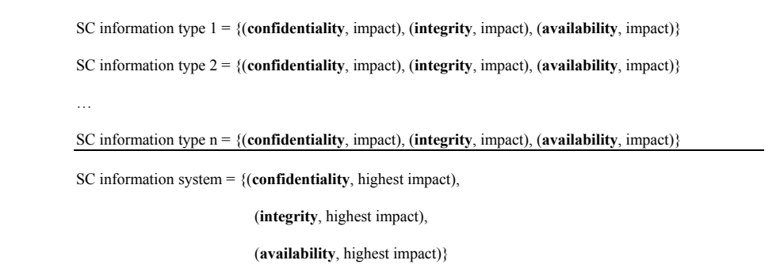
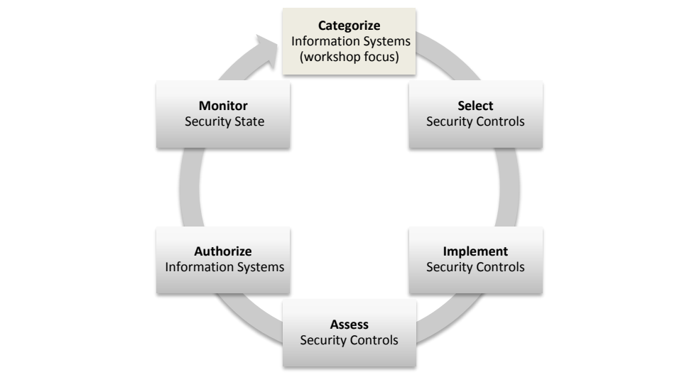
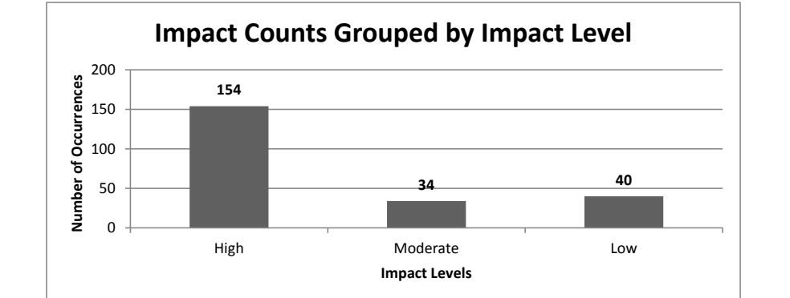
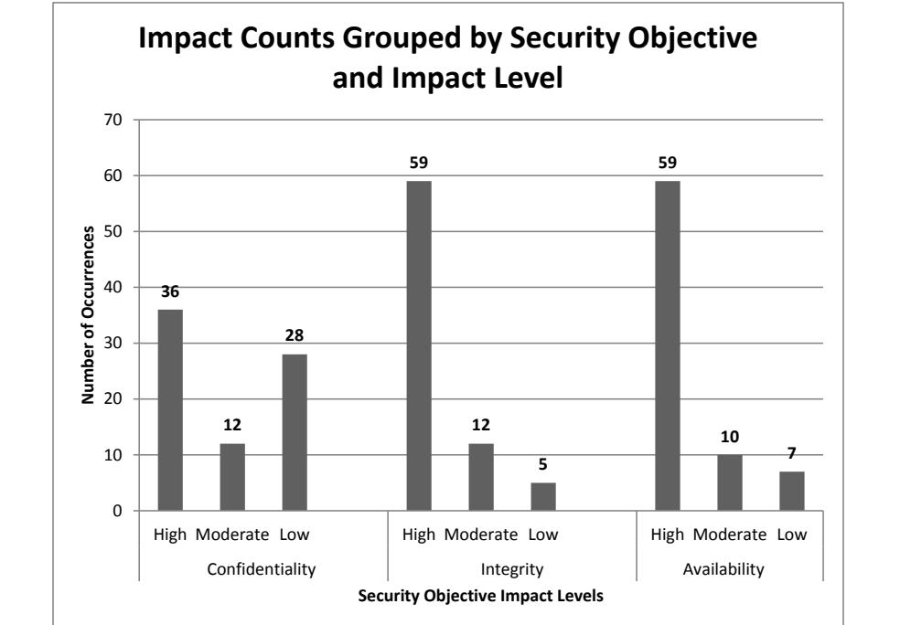
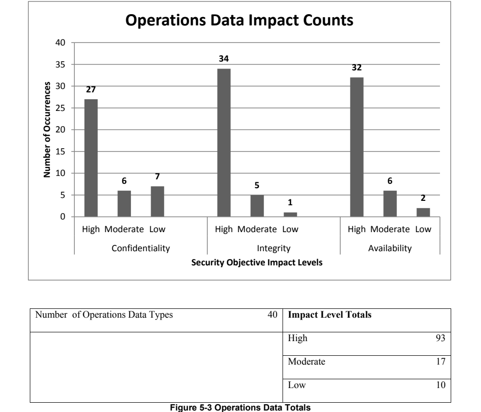
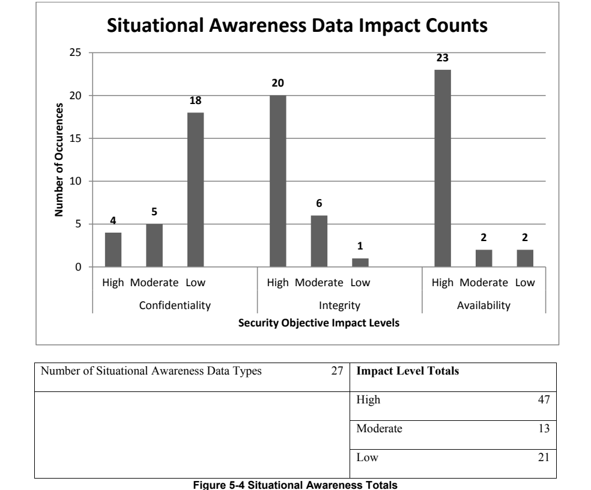
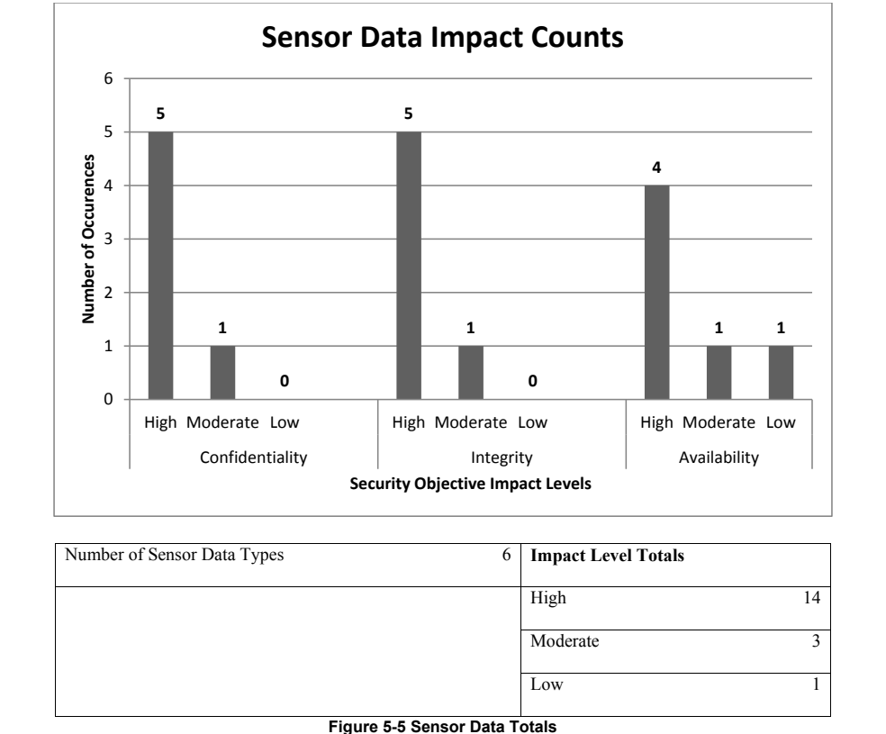
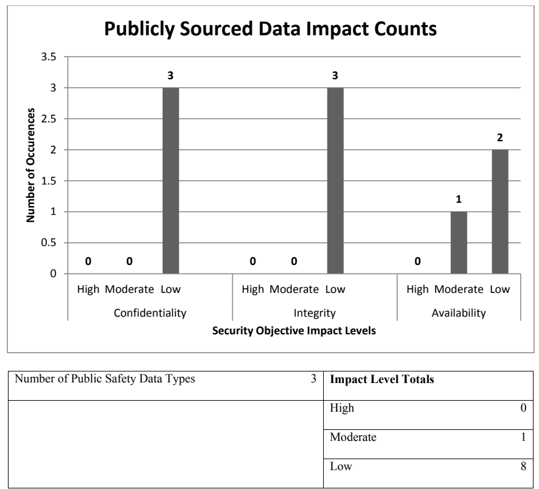

NIST IR 8135 日本語訳
英語タイトル : Identifying and Categorizing Data Types for Public Safety Mobile Applications: Workshop Report日本語タイトル : 公共安全モバイルアプリケーション向けデータ型の特定と分類：ワークショップ報告書
公開日 : 2016-06-01
原文URL : https://csrc.nist.gov/pubs/ir/8135/final
翻訳編集 : 自動生成（有志による非公式の日本語訳）, 原文取得日 : 2026-10-31, 訳文 : 352 / 353 ブロック
[要約] NIST IR 8135 は、APCO が FirstNet および商務省と協力して 2015 年 6 月 2 日に半日の日程で開催したワークショップの報告書です。ワークショップの目標は、全国公共安全ブロードバンドネットワーク（NPSBN）上で動くアプリケーションを流れるデータの種類を特定し始めること、および、それらのデータ型が公共安全組織のサイバーセキュリティ態勢にどう影響するかを検討することでした。初動対応者、業界の指導者、政府の代表からなる多様な参加者が出席しました。本書は、ワークショップの背景、方法論、構成を説明し、参加者から得られた意見として特定されたデータ型と分類を記録しています。
NISTIR 8135
NISTIR 8135
Identifying and Categorizing Data Types for Public Safety Mobile Applications: Workshop Report
公共安全モバイルアプリケーション向けデータ型の特定と分類: ワークショップ報告書
Michael Ogata
Michael Ogata
This publication is available free of charge from:
http://dx.doi.org/10.6028/NIST.IR.8135
本刊行物は以下から無料で入手できます:
http://dx.doi.org/10.6028/NIST.IR.8135
［NIST のロゴ。公的な標章のため、この非公式サイトには掲載していません。原本 PDF を参照してください。］
NISTIR 8135
NISTIR 8135
Identifying and Categorizing Data Types for Public Safety Mobile Applications: Workshop Report
公共安全モバイルアプリケーション向けデータ型の特定と分類: ワークショップ報告書
Michael Ogata
Software and Systems Division
Information Technology Laboratory
Michael Ogata
ソフトウェア・システム部門
情報技術研究所
This publication is available free of charge from:
http://dx.doi.org/10.6028/NIST.IR.8135
本刊行物は以下から無料で入手できます:
http://dx.doi.org/10.6028/NIST.IR.8135
May 2016
2016年5月
U.S. Department of Commerce
Penny Pritzker, Secretary
米国商務省
Penny Pritzker 長官
National Institute of Standards and Technology
Willie May, Under Secretary of Commerce for Standards and Technology and Director
国立標準技術研究所
Willie May、商務次官（標準・技術担当）兼所長
National Institute of Standards and Technology Interagency or Internal Report 8135
40 pages (May 2016)
国立標準技術研究所 省庁間報告書または内部報告書 8135
40ページ（2016年5月）
This publication is available free of charge from:
http://dx.doi.org/10.6028/NIST.IR.8135
本刊行物は以下から無料で入手できます:
http://dx.doi.org/10.6028/NIST.IR.8135
Certain commercial entities, equipment, or materials may be identified in this document in order to describe an experimental procedure or concept adequately. Such identification is not intended to imply recommendation or endorsement by NIST, nor is it intended to imply that the entities, materials, or equipment are necessarily the best available for the purpose.
本文書では、実験的な手順や概念を適切に説明するために、特定の商業団体、機器、または資材を挙げている場合があります。そのような記載は、NIST による推奨または推薦を意味するものではなく、当該の団体、資材、または機器がその目的に対して必ずしも最良であることを意味するものでもありません。
There may be references in this publication to other publications currently under development by NIST in accordance with its assigned statutory responsibilities. The information in this publication, including concepts and methodologies, may be used by federal agencies even before the completion of such companion publications. Thus, until each publication is completed, current requirements, guidelines, and procedures, where they exist, remain operative. For planning and transition purposes, federal agencies may wish to closely follow the development of these new publications by NIST.
本刊行物には、NIST が法令で定められた責務に従って現在策定中の他の刊行物への言及が含まれる場合があります。本刊行物の情報（概念や方法論を含む）は、そうした関連刊行物の完成前であっても、連邦機関が利用してもよいです。したがって、各刊行物が完成するまでは、現行の要件、ガイドライン、手順が存在する場合は、それらが引き続き有効です。計画および移行のため、連邦機関は、NIST によるこれらの新しい刊行物の策定状況を注意深く追うことを検討してもよいです。
Organizations are encouraged to review all draft publications during public comment periods and provide feedback to NIST. Many NIST cybersecurity publications, other than the ones noted above, are available at http://csrc.nist.gov/publications.
組織には、パブリックコメント期間中にすべての草案刊行物をレビューし、NIST にフィードバックを提供することが推奨されます。上記で言及したものを除き、多くの NIST サイバーセキュリティ刊行物が http://csrc.nist.gov/publications で入手できます。
Comments on this publication may be submitted to:
本刊行物に関するコメントの送付先:
National Institute of Standards and Technology
Attn: Applied Cybersecurity Division, Information Technology Laboratory
100 Bureau Drive (Mail Stop 2000) Gaithersburg, MD 20899-2000
Email: mobile_app_data_types@nist.gov
National Institute of Standards and Technology
Attn: Applied Cybersecurity Division, Information Technology Laboratory
100 Bureau Drive (Mail Stop 2000) Gaithersburg, MD 20899-2000
Email: mobile_app_data_types@nist.gov
All comments are subject to release under the Freedom of Information Act (FOIA).
すべてのコメントは、情報自由法（FOIA）に基づく公開の対象となります。
Reports on Computer Systems Technology
コンピュータシステム技術に関する報告書
The Information Technology Laboratory (ITL) at the National Institute of Standards and Technology (NIST) promotes the U.S. economy and public welfare by providing technical leadership for the Nation’s measurement and standards infrastructure. ITL develops tests, test methods, reference data, proof of concept implementations, and technical analyses to advance the development and productive use of information technology. ITL’s responsibilities include the development of management, administrative, technical, and physical standards and guidelines for the cost-effective security and privacy of other than national security-related information in federal information systems.
国立標準技術研究所（NIST）の情報技術研究所（ITL）は、国の計測・標準インフラストラクチャに対する技術的なリーダーシップを提供することで、米国の経済と公共の福祉を促進します。ITL は、情報技術の発展と生産的な利用を推進するため、テスト、テスト方法、参照データ、概念実証の実装、技術分析を開発しています。ITL の責務には、連邦情報システムにおける国家安全保障に関するもの以外の情報について、そのセキュリティとプライバシーを費用対効果の高い形で確保するための、管理上、事務上、技術上および物理上の標準とガイドラインの策定が含まれます。
Abstract
要旨
The Association of Public-Safety Communications (APCO), in cooperation with FirstNet and the Department of Commerce held a half-day workshop on June 2, 2015, “Identifying and Categorizing Data Types for Public Safety Mobile Applications.” The goal of this workshop was to begin identifying different types of data that will flow through applications that operate on the National Public Safety Broadband Network (NPSBN). A diverse group of first responders, industry leaders, and government representatives attended the workshop. This document describes the workshop and captures the input received from the workshop attendees.
公共安全通信協会（APCO）は、FirstNet および商務省と協力して、2015 年 6 月 2 日に半日のワークショップ「公共安全モバイルアプリケーション向けデータ型の特定と分類」を開催しました。このワークショップの目標は、全米公共安全ブロードバンドネットワーク（NPSBN）上で動作するアプリケーションを流れるさまざまな種類のデータの特定に着手することでした。ファーストレスポンダー、業界のリーダー、政府の代表者からなる多様な参加者がワークショップに出席しました。本書は、このワークショップを説明し、参加者から得られた意見をまとめたものです。
Keywords
キーワード
communication; cybersecurity; first responders; FirstNet; mobile applications; public safety
通信、サイバーセキュリティ、ファーストレスポンダー、FirstNet、モバイルアプリケーション、公共安全
Acknowledgements
謝辞
This publication was developed as part of the NTIA/NIST Public Safety Communication Research (PSCR) program with sponsorship from the Office for Interoperability and Compatibility (OIC) at the Department of Homeland Security (DHS). The author of this document would like to thank Jeff Cohen and Mark Reddish from the Association of Public-Safety Communication Officials (APCO), Mark Golaszewski of First Responder Network Authority (FirstNet) and Ray Lehr for their help organizing and proctoring the workshop.
本刊行物は、国土安全保障省（DHS）の相互運用性・互換性室（OIC）の支援を受けて、NTIA/NIST の公共安全通信研究（PSCR）プログラムの一環として作成されました。本書の著者は、ワークショップの運営と進行に協力してくれた、Association of Public-Safety Communication Officials（APCO）の Jeff Cohen 氏と Mark Reddish 氏、First Responder Network Authority（FirstNet）の Mark Golaszewski 氏、および Ray Lehr 氏に感謝します。
The organizers and attendees would also like to extend their gratitude to United States Coast Guard Sector San Diego for the use of their facilities during the course of the workshop.
主催者と参加者は、ワークショップの期間中に施設を使用させてくれた、米国沿岸警備隊サンディエゴ管区にも感謝します。
Audience
対象読者
This document is intended for members of the public safety community. It is also intended for mobile application developers who are interested in building applications for the public safety domain.
本書は、公共安全コミュニティの関係者を対象としています。また、公共安全分野向けのアプリケーションの構築に関心のあるモバイルアプリケーション開発者も対象としています。
Trademark Information
商標情報
All product names are registered trademarks or trademarks of their respective companies.
すべての製品名は、それぞれの企業の登録商標または商標です。
Table of Contents
目次
List of Appendices
付録の一覧
List of Figures
図の一覧
List of Tables
表の一覧
1 Introduction
1 はじめに
1.1 Overview
1.1 概要
The Association of Public-Safety Communications (APCO), in cooperation with FirstNet and the Department of Commerce held a half-day workshop on June 2, 2015, “Identifying and Categorizing Data Types for Public Safety Mobile Applications.” The workshop was held at the Untied States Cost Guard Sector San Diego facility in San Diego, California. Its primary goal was to identify different types of data that will be used by the mobile applications that will operate on the National Public Safety Broadband Network (NPSBN). The workshop’s second objective was to examine how these data types influence the cybersecurity posture of a public safety organization. Approximately 50 participants provided input to the workshop. These attendees came from a diverse background of expertise, hailing from fire and emergency medical services (EMS), law enforcement, the telecom industry, federal and local governments, and academia.
公共安全通信協会（APCO）は、FirstNet および商務省と協力して、2015 年 6 月 2 日に半日のワークショップ「Identifying and Categorizing Data Types for Public Safety Mobile Applications」を開催しました。このワークショップは、カリフォルニア州サンディエゴにある米国沿岸警備隊サンディエゴ管区の施設で行われました。主な目標は、全米公共安全ブロードバンドネットワーク（NPSBN）上で動作するモバイルアプリケーションが使用するさまざまな種類のデータを特定することでした。ワークショップの第 2 の目的は、これらのデータ型が公共安全組織のサイバーセキュリティ態勢にどのように影響するかを検討することでした。約 50 人の参加者がワークショップに意見を寄せました。参加者は、消防・救急医療サービス（EMS）、法執行機関、通信業界、連邦政府および地方政府、学術界など、多様な専門分野の人々でした。
1.2 Workshop Organizers
1.2 ワークショップの主催者
The “Identifying and Categorizing Data Types for Public Safety Mobile Applications” workshop was organized and planned by representatives from APCO and the Department of Commerce. Each of the workshop organizers has a vested interest in ensuring that public safety mobile applications are developed to meet the functional, security, and usability needs of the public safety community.
「Identifying and Categorizing Data Types for Public Safety Mobile Applications」ワークショップは、APCO と商務省の代表者によって組織され、計画されました。ワークショップの主催者はいずれも、公共安全モバイルアプリケーションが、公共安全コミュニティの機能面、セキュリティ面、使いやすさの面でのニーズを満たすように開発されることに、強い関心を持っています。
APCO is the world’s oldest and largest organization of public safety communications professionals. Its members include state and local employees of law enforcement, fire, and emergency medical service departments. APCO serves public safety communications practitioners by providing professional development, technical assistance, advocacy, training, and outreach. In addition, APCO is an American National Standards Institute (ANSI) accredited standards developer.
APCO は、公共安全通信の専門家による世界最古かつ最大の組織です。会員には、法執行機関、消防、救急医療サービス部門の州および地方の職員が含まれます。APCO は、専門能力の開発、技術支援、提言活動、トレーニング、アウトリーチを提供することで、公共安全通信の実務者を支援しています。さらに APCO は、米国国家規格協会（ANSI）の認定を受けた標準開発機関でもあります。
The Department of Commerce is home to the Public Safety Communications Research (PSCR) program, a joint program run by the National Telecommunications and Information Administration (NTIA) and the National Institute of Standards and Technology (NIST). PSCR performs research, development, testing, and evaluation to foster nationwide public safety communications interoperability on behalf of their sponsors at the Department of Homeland Security (DHS) Office of Interoperability and Compatibility (OIC)/Office of Emergency Communication (OEC) and First Responder Network Authority (FirstNet). Working with public safety organizations (e.g., APCO and the National Public Safety Telecommunications Council (NPSTC)), PSCR draws on public safety communications requirements provided by public safety practitioners to ground efforts in the needs of the public safety community. In 2013, PSCR began cybersecurity research efforts related to public safety communications including public safety mobile application security.
商務省には、国家電気通信情報庁（NTIA）と国立標準技術研究所（NIST）が共同で運営するプログラムである、公共安全通信研究（PSCR）プログラムがあります。PSCR は、国土安全保障省（DHS）の相互運用性・互換性室（OIC）／緊急通信室（OEC）および First Responder Network Authority（FirstNet）という支援者のために、全米の公共安全通信の相互運用性を促進する研究、開発、テスト、評価を行っています。PSCR は、公共安全組織（たとえば APCO や National Public Safety Telecommunications Council（NPSTC））と協力し、公共安全の実務者から提供される公共安全通信の要件を活用して、公共安全コミュニティのニーズに根ざした取り組みを進めています。2013 年に PSCR は、公共安全モバイルアプリケーションのセキュリティを含む、公共安全通信に関するサイバーセキュリティの研究を開始しました。
1.3 Document Structure
1.3 文書の構成
The remainder of this document captures the background and output of the workshop. Section 2 describes the goals and reasoning behind why this workshop was held. It also provides the historical context of how the workshop satisfies the recommendations of previous work concerning mobile application security. Section 3 explains the methodology used by the workshop organizers to develop the workshop activities. Section 4 describes the workshop activities and structure. Section 5 relates the data types that were identified and categorized as part of the workshop proceedings. Appendix A— details the workshop scenarios supplied to the attendees. These scenarios were used to frame the discussions held during the workshop.
本書の残りの部分では、ワークショップの背景と成果を記録しています。第 2 節では、このワークショップの目標と、開催に至った理由を説明します。また、モバイルアプリケーションのセキュリティに関するこれまでの取り組みの推奨事項を、このワークショップがどのように満たすかについて、歴史的な背景も示します。第 3 節では、ワークショップの主催者が活動を策定するために用いた方法論を説明します。第 4 節では、ワークショップの活動と構成を説明します。第 5 節では、ワークショップの議事の一環として特定され、分類されたデータ型を述べます。付録 A では、参加者に提供されたワークショップのシナリオを詳しく説明します。これらのシナリオは、ワークショップで行われた議論の枠組みを定めるために使用されました。
2. Workshop Background
2. ワークショップの背景
2.1 Overview
2.1 概要
Mobile applications that run on Long Term Evolution (LTE) devices will feature an increasingly prominent role in public safety. The data processed by these applications will factor into a public safety organization’s cybersecurity posture. This section describes the motivations behind why the organizers felt this workshop was beneficial to the public safety community including supporting work and documentation that support these motivations.
Long Term Evolution（LTE）デバイス上で動作するモバイルアプリケーションは、公共安全においてますます重要な役割を果たすようになります。これらのアプリケーションが処理するデータは、公共安全組織のサイバーセキュリティ態勢に影響します。本節では、主催者がこのワークショップを公共安全コミュニティにとって有益だと考えた理由を、これらの動機を裏付ける関連する取り組みや文書を含めて説明します。
The Middle Class Tax Relief Act of 2012 mandated the creation of the nation’s first nationwide public safety broadband network (NPSBN). This legislation also created the First Responder Network Authority (FirstNet) whose role it is to build and maintain the NPSBN. The goal of the NPSBN is to provide public safety and first responders with modern and interoperable access to information and services. The NPSBN will be built using LTE technology. This new network will be accessed by a diverse ecosystem of devices. A mixture of commercial off-the-shelf (COTS) and special purpose LTE devices will utilize the NPSBN. The mobile applications that will run on those devices will be an important vehicle to deliver data and services to public safety personnel. These applications will also have specific cybersecurity requirements that will set them apart from mobile applications targeted at the general consumer market.
2012 年中間層減税法（Middle Class Tax Relief Act of 2012）は、国内初の全米公共安全ブロードバンドネットワーク（NPSBN）の構築を義務付けました。この法律は、NPSBN の構築と維持を担う First Responder Network Authority（FirstNet）も創設しました。NPSBN の目標は、公共安全機関とファーストレスポンダーに、情報とサービスへの最新で相互運用可能なアクセスを提供することです。NPSBN は LTE 技術を用いて構築されます。この新しいネットワークには、多様なデバイスのエコシステムからアクセスされます。市販の既製（COTS）の LTE デバイスと特殊用途の LTE デバイスが混在して、NPSBN を利用します。これらのデバイス上で動作するモバイルアプリケーションは、公共安全の要員にデータとサービスを届ける重要な手段になります。これらのアプリケーションには、一般消費者市場向けのモバイルアプリケーションとは一線を画す、固有のサイバーセキュリティ要件も課されます。
The workshop described in this document was designed to utilize the domain knowledge of public safety officials to list the types of data that will be handled by the mobile applications that serve their needs. More specifically it supports the creation of a publicly maintained data dictionary of data types for public safety mobile applications. A data dictionary is a canonically maintained list of data type names and their associated definitions. It is also meant to be a medium to relate how each of these data types impact cybersecurity from the perspective of public safety organizations. The creation of a data dictionary for public safety fulfills two needs. First, it fulfills a recommendation made by PSCR, NIST, and APCO during the output of the previous workshop. Second, it supports and enables several recommendations made by FirstNet. The remainder of this section provides a brief overview of these two areas.
本書で説明するワークショップは、公共安全の関係者が持つ分野の知識を活用して、そのニーズに応えるモバイルアプリケーションが扱うデータの種類を列挙するように設計されました。より具体的には、公共安全モバイルアプリケーション向けのデータ型について、公開の場で維持されるデータ辞書の作成を支えるものです。データ辞書とは、データ型の名称とそれぞれの定義を、統一された基準に従って維持する一覧です。また、公共安全組織の観点から、これら各データ型がサイバーセキュリティにどのような影響を与えるかを関連付ける媒体となることも意図しています。公共安全のためのデータ辞書の作成は、2 つのニーズを満たします。1 つ目は、前回のワークショップの成果として PSCR、NIST、APCO が行った推奨事項を満たすことです。2 つ目は、FirstNet が行ったいくつかの推奨事項を支え、実現を可能にすることです。本節の残りの部分では、これら 2 つの分野を簡潔に概説します。
2.2 Previous Workshop
2.2 過去のワークショップ
To better define and explore how cybersecurity relates to public safety PSCR, APCO, and NIST have engaged directly with the public safety community through a series of workshops. The first such workshop, “Public Safety Mobile Application Security Requirements,” was held in February 2014. That workshop and its findings are summarized in NIST Interagency Report (NISTIR) 8018 [5]. Its goal was to explore how public safety specific security requirements on mobile applications will be unique for public safety when compared to other mobile application markets. Due to the often life-critical nature of public safety, it will be clear that mobile applications for public safety will have stringent requirements for information security, reliability, and usability. This workshop focused on six areas:
サイバーセキュリティが公共安全とどのように関係するかをよりよく定義し、探究するために、PSCR、APCO、NIST は、一連のワークショップを通じて公共安全コミュニティと直接関わってきました。その最初のワークショップである「Public Safety Mobile Application Security Requirements」は、2014 年 2 月に開催されました。このワークショップとその調査結果は、NIST Interagency Report（NISTIR）8018 [5] にまとめられています。その目標は、他のモバイルアプリケーション市場と比べて、モバイルアプリケーションに対する公共安全固有のセキュリティ要件がどのような点で異なるかを探究することでした。公共安全はしばしば人命に関わる性質を持つため、公共安全向けのモバイルアプリケーションには、情報セキュリティ、信頼性、使いやすさに関する厳格な要件が課されることは明らかです。このワークショップは、次の 6 つの分野に焦点を当てました。
•Battery Life,
•バッテリー寿命、
•Unintentional Denial of Service (DoS),
•意図しないサービス拒否（DoS）、
•Mobile Application Vetting,
•モバイルアプリケーションの審査、
•Location Information,
•位置情報、
•Data Protection, and
•データ保護、
•Identity Management.
•アイデンティティ管理。
NISTIR 8018 establishes recommendations as well as describes further areas of research for each of these topics. Public safety has unique requirements on data when compared to the consumer mobile application market space. Public safety applications may handle sensitive information concerning active investigations. They may process private medical data or maintain a record of a public safety official’s geographic location. NISTIR 8018 captured the desire of public safety officials to have a structured and consistent approach to data protection. It proposes multiple solutions for this approach. At a minimum, it states the application developers must make declarations as to what data their applications handle and what mechanisms or techniques they use to safeguard that data. However, it also recognized that without a codified way to describe public safety data, even this minimal requirement may fail to meet public safety’s needs. NISTIR 8018 therefore recommends the creation of a public safety data dictionary to enumerate and define public safety data types.
NISTIR 8018 は、これらの各テーマについて、推奨事項を定めるとともに、さらなる研究分野を説明しています。公共安全には、一般消費者向けのモバイルアプリケーション市場と比べて、データに関する固有の要件があります。公共安全のアプリケーションは、進行中の捜査に関する機微な情報を扱う場合があります。また、非公開の医療データを処理したり、公共安全の関係者の地理的な位置の記録を保持したりする場合があります。NISTIR 8018 は、データ保護について構造化され一貫した手法を求める公共安全の関係者の要望を捉えています。そして、この手法のための複数の解決策を提案しています。最低限、アプリケーションの開発者は、そのアプリケーションがどのようなデータを扱い、そのデータを保護するためにどのような仕組みや技法を用いるかを宣言しなければならないと述べています。しかし同時に、公共安全のデータを記述する体系化された方法がなければ、この最低限の要件でさえ、公共安全のニーズを満たせない可能性があることも認めています。このため NISTIR 8018 は、公共安全のデータ型を列挙し定義するために、公共安全のデータ辞書を作成することを推奨しています。
2.3 Recommendations by FirstNet
2.3 FirstNet による推奨事項
This data dictionary would also serve to support recommendations made by FirstNet. FirstNet understands the importance of incorporating cybersecurity into the foundations of the NPSBN. The request for proposal (RFP) that defines how the network will be constructed pays special consideration to defining best practices and recommendations concerning mobile application security. Specific recommendations concerning public safety mobile applications can be found in Appendix C-10, “NPSBN Cyber Security,” of the NPSBN RFP [2]. These recommendations include, but are not limited to the following:
このデータ辞書は、FirstNet が行った推奨事項を支えることにも役立ちます。FirstNet は、サイバーセキュリティを NPSBN の基盤に組み込むことの重要性を理解しています。ネットワークの構築方法を定める提案依頼書（RFP）は、モバイルアプリケーションのセキュリティに関するベストプラクティスと推奨事項の定義に特別な配慮を払っています。公共安全モバイルアプリケーションに関する具体的な推奨事項は、NPSBN の RFP [2] に含まれる付録 C-10「NPSBN Cyber Security」に記載されています。これらの推奨事項には、次のものが含まれますが、これらに限定されません。
•Evaluation and certification of application developers;
•アプリケーション開発者の評価と認証
•Analysis and certification of applications;
•アプリケーションの分析と認証
•Ensuring applications protect data while at rest, in use, and in transit; and
•アプリケーションが、保存時、使用時、転送時のデータを保護することの確保。
•Ensuring proper logging of applications and user actions.
•アプリケーションとユーザーの操作の適切なログ記録の確保
A data dictionary enables these recommendations. Well-defined data types improve the accuracy of application analysis and certification. They better define policy concerning what data should and should not be retained in application logs and for how long that data is preserved. It provides a mechanism for evaluating application developers’ understanding of the public safety domain. Finally, it defines what requirements applications must fulfill concerning what and how data is protected.
データ辞書は、これらの推奨事項を実現可能にします。明確に定義されたデータ型は、アプリケーションの分析と認証の精度を高めます。また、どのデータをアプリケーションのログに保持すべきか、保持すべきでないか、さらにそのデータをどのくらいの期間保存するかに関するポリシーを、より適切に定義できます。データ辞書は、アプリケーション開発者の公共安全分野に対する理解を評価する仕組みを提供します。最後に、データ辞書は、どのデータをどのように保護するかに関してアプリケーションが満たさなければならない要件を定義します。
2.4 Additional Motivations
2.4 その他の動機
In addition to these two areas, proactive identification of public safety-specific data and information types strengthens public safety’s security posture in several ways. First, it provides a common language for deriving the functional and security requirements of public safety applications. This strengthens public safety organizations by helping them clearly state their requirements to application developers. It also improves an organization’s ability to compare and contrast mobile applications both within their organization but also between other organizations. Second, it familiarizes the mobile application development community with public safety’s mission and domain requirements. Finally, knowing the data, and the value of the data, helps organizations to select and develop security controls and capabilities needed to protect that data.
これら 2 つの分野に加えて、公共安全に固有のデータと情報型を事前に特定することは、いくつかの面で公共安全のセキュリティ態勢を強化します。第 1 に、公共安全アプリケーションの機能要件とセキュリティ要件を導き出すための共通言語を提供します。これにより、公共安全組織はアプリケーション開発者に自らの要件を明確に伝えやすくなります。また、組織内のモバイルアプリケーション同士だけでなく、組織間でモバイルアプリケーションを比較・対照する能力も向上します。第 2 に、モバイルアプリケーション開発コミュニティに、公共安全の任務と分野の要件を周知できます。最後に、データとその価値を知ることは、そのデータを保護するために必要なセキュリティ管理策と能力を、組織が選択し開発するうえで役立ちます。
3. Workshop Methodology
3. ワークショップの方法論
3.1 Overview
3.1 概要
The main goal of the workshop was to identify data types that will be handled by public safety mobile devices and discuss how those data types will influence the security requirements enforced on public safety mobile applications. This section describes the methodology that served as inspiration for the workshop’s activities. First, NIST Federal Information Processing Standard (FIPS) 199, Standards for Security Categorization of Federal Information and Information Systems [7], is discussed. FIPS 199 provides clarification for how the workshop organizers defined an information type. It then describes the process of determining an information type’s relationship with cybersecurity risk and how those relationships can be used to describe the cybersecurity risk of information systems. Then, the NIST Risk Management Framework is used to examine how security categorization fits into a larger cybersecurity posture. Next, NIST Special Publication (SP) 800-60 Volume I Revision 1, Guide for Mapping Types of Information and Information Systems to Security Categories [6], further defines information types and describes a process for identifying them within an information system. This section concludes with an explanation as to how these topics are related to the activities conducted during the workshop
ワークショップの主な目標は、公共安全のモバイルデバイスが扱うデータ型を特定し、それらのデータ型が、公共安全モバイルアプリケーションに課されるセキュリティ要件にどのように影響するかを議論することでした。本節では、ワークショップの活動の着想の源となった方法論を説明します。まず、NIST Federal Information Processing Standard（FIPS）199『Standards for Security Categorization of Federal Information and Information Systems』[7] を取り上げます。FIPS 199 は、ワークショップの主催者が情報型をどのように定義したかを明確にします。次に、情報型とサイバーセキュリティリスクとの関係を判断するプロセスと、それらの関係を用いて情報システムのサイバーセキュリティリスクをどのように記述できるかを説明します。続いて、セキュリティ分類がより大きなサイバーセキュリティ態勢にどのように位置づけられるかを調べるために、NIST リスクマネジメントフレームワークを用います。次に、NIST Special Publication（SP）800-60 Volume I Revision 1『Guide for Mapping Types of Information and Information Systems to Security Categories』[6] が、情報型をさらに定義し、情報システム内でそれらを特定するプロセスを説明します。本節は、これらの話題がワークショップで行われた活動とどのように関連するかの説明で締めくくります。
3.2 NIST FIPS 199
3.2 NIST FIPS 199
NIST FIPS 199 defines an information type as a specific category of information (e.g., privacy, medical, proprietary, financial, investigative, contractor sensitive, security management), defined by an organization, or in some instances, by a specific law, Executive Order, directive, policy, or regulation [4]. This definition is particularly apt for public safety. The data handled by public safety will be subject to varying policy and regulations. It may change between public safety organizations, and it will differ based on the mission types of different public safety organizations. The workshop organizers narrowed this definition to included only information types that are retrieved by, stored on, or transmitted from a public safety mobile application
NIST FIPS 199 は、情報型を、組織によって、あるいは場合によっては特定の法律、大統領令、指令、ポリシー、規制によって定義される、情報の特定のカテゴリ（たとえばプライバシー、医療、専有、財務、捜査、請負業者の機微情報、セキュリティ管理）と定義しています [4]。この定義は、公共安全に特によく当てはまります。公共安全が扱うデータは、さまざまなポリシーや規制の対象となります。それは公共安全組織ごとに異なる場合があり、公共安全組織ごとの任務の種類によっても異なります。ワークショップの主催者は、この定義を、公共安全モバイルアプリケーションによって取得され、公共安全モバイルアプリケーションに格納され、または公共安全モバイルアプリケーションから送信される情報型に限定しました。
NIST FIPS 199 further states that each information type has a relationship with three core cybersecurity objectives:
NIST FIPS 199 はさらに、各情報型が、3 つの中核的なサイバーセキュリティ目標と関係を持つと述べています。
•Confidentiality – preventing unauthorized disclosure of information;
•機密性 – 情報の不正な開示を防ぐこと。
•Integrity – preventing unauthorized modification of information; and
•完全性 – 情報の不正な改変を防ぐこと。
•Availability – providing timely access to information.
•可用性 – 情報へのタイムリーなアクセスを提供すること。
For each of these objectives, an information type is assigned an impact level of low, moderate, or high, depending on what security implications would result from a failure to achieve said objective.
これらの各目標について、その目標を達成できなかった場合にどのようなセキュリティ上の影響が生じるかに応じて、情報型には低、中、高のいずれかの影響レベルが割り当てられます。
•Low – limited adverse effect on organizational operations, organizational assets, or individuals resulting in minor degradation to an organization’s ability to carry out its mission, minor financial loss, and/or minor harm to individuals.
•低 – 組織の運営、組織の資産、または個人に対する限定的な悪影響であり、組織の任務遂行能力のわずかな低下、軽微な金銭的損失、および／または個人への軽微な被害をもたらすもの。
•Moderate – serious adverse effect on organizational operations, organizational assets, or individuals including resulting in significant degradation to an organization’s ability to carry out its mission, significant financial loss, and/or significant but non-life-threatening harm to individuals.
•中 – 組織の運営、組織の資産、または個人に対する重大な悪影響であり、組織の任務遂行能力の著しい低下、著しい金銭的損失、および／または個人への重大ではあるが生命を脅かさない被害をもたらすもの。
•High – severe or catastrophic effect on organizational operations, organizational assets, or individuals resulting in severe degradation to or a complete loss of an organization’s ability to carry out its mission, severe financial loss, and/or catastrophic harm to individuals involving loss of life or serious life threatening injuries.
•高 – 組織の運営、組織の資産、または個人に対する深刻または壊滅的な影響であり、組織の任務遂行能力の深刻な低下または完全な喪失、深刻な金銭的損失、および／または人命の喪失や生命を脅かす重傷を伴う個人への壊滅的な被害をもたらすもの。
NIST FIPS 199 provides a compact representation for an information type’s security categorization [7]:
NIST FIPS 199 は、情報型のセキュリティ分類について、簡潔な表現を提供しています [7]。
Security Category (SC) information type = {(confidentiality, impact), (integrity, impact), (availability, impact)}
セキュリティカテゴリ（SC）情報型 = {(機密性, 影響), (完全性, 影響), (可用性, 影響)}
Finally, NIST FIPS 199 describes applying a security categorization to an information system. U.S. law defines an information system as “a discrete set of information resources organized for the collection, processing, maintenance, use, sharing, or disposition of information” [8]. By this definition, a public safety mobile device is an information system. Applying a security categorization to an information system entails identifying the impact level for each of the cybersecurity objectives—confidentiality, integrity, and availability—for the information system. To do this, an organization must first identify each of the information type categorizations associated with that system. The highest impact level for each security objective becomes the impact level for that objective for the information system. This process is summarized in Figure 3-1:
最後に、NIST FIPS 199 は、情報システムにセキュリティ分類を適用することを説明しています。米国の法律は、情報システムを「情報の収集、処理、維持、使用、共有、または処分のために組織された、個別の情報資源の集合」と定義しています [8]。この定義により、公共安全のモバイルデバイスは情報システムです。情報システムにセキュリティ分類を適用するには、その情報システムについて、サイバーセキュリティ目標（機密性、完全性、可用性）のそれぞれに対する影響レベルを特定する必要があります。そのためには、組織はまず、そのシステムに関連する情報型の分類をそれぞれ特定しなければなりません。各セキュリティ目標について最も高い影響レベルが、その情報システムのその目標に対する影響レベルになります。このプロセスを図 3-1 にまとめます。

表記を並べた図です。「SC information type 1 = {(confidentiality, impact), (integrity, impact), (availability, impact)}」、同じ形の「SC information type 2」、省略記号「…」、同じ形の「SC information type n」が並びます。その下に横線があり、線の下に「SC information system = {(confidentiality, highest impact), (integrity, highest impact), (availability, highest impact)}」とあります。confidentiality、integrity、availabilityの語は太字です。
Figure 3-1 Categorizing an Information System
図 3-1 情報システムの分類
3.3 NIST Risk Management Framework
3.3 NIST リスクマネジメントフレームワーク
The NIST Risk Management Framework (RMF) describes the processes through which an organization manages risk to the organization or to individuals associated with the operation of an information system [4]. The RMF describes the risk associated with an information system as being a measure of two components [3]:
NIST リスクマネジメントフレームワーク（RMF）は、組織が、組織または情報システムの運用に関連する個人に対するリスクを管理するプロセスを説明しています [4]。RMF は、情報システムに関連するリスクを、次の 2 つの要素の尺度として説明しています [3]。
•The adverse impacts that would arise should there be a compromise to confidentiality, integrity, or availability to an information system; and
•情報システムの機密性、完全性、または可用性が危殆化した場合に生じる悪影響、および
•The likelihood of such an occurrence.
•そのような事象が発生する可能性。
The RMF establishes a life cycle for managing the risk associated with an information system. Figure 3-2 is an overview of the steps involved in the cycle. The first phase in this cycle is the categorization of the information system in the manner described in Section 3.2. Based on how the system is categorized, an organization must then select and develop appropriate security controls to safeguard the system. Once these controls have been implemented, assessed, and approved the information system is authorized for operation. The final phase in the cycle is to monitor the information system. Monitoring helps determine if the deployed security controls continue to be effective over time. It also addresses the inevitable changes to hardware, firmware, and operational environment that the system can experience during the lifetime of the system’s deployment. Rather than being a terminating state for the RMF, the monitor phase requires a continuous effort. Any changes to a system’s categorization or security controls determined to be ineffective trigger a new iteration through the RMF life cycle.
RMF は、情報システムに関連するリスクを管理するためのライフサイクルを定めています。図 3-2 は、このサイクルに含まれる手順の概要です。このサイクルの最初のフェーズは、3.2 節で説明した方法による情報システムの分類です。システムがどのように分類されたかに基づいて、組織は次に、システムを保護するための適切なセキュリティ管理策を選択し、開発しなければなりません。これらの管理策が実装され、評価され、承認されると、情報システムは運用が認可されます。サイクルの最後のフェーズは、情報システムの監視です。監視は、展開されたセキュリティ管理策が、時間が経っても有効であり続けているかどうかを判断するのに役立ちます。また、システムの展開期間中にシステムが経験する、ハードウェア、ファームウェア、運用環境の避けられない変更にも対処します。監視フェーズは、RMF の終了状態ではなく、継続的な取り組みを必要とします。システムの分類の変更や、有効でないと判断されたセキュリティ管理策があれば、RMF のライフサイクルを新たに一巡することになります。

6つの枠が時計回りの円形の矢印でつながった循環図です。上の強調された「Categorize Information Systems (workshop focus)」（情報システムの分類。ワークショップの焦点）から、「Select Security Controls」（セキュリティ管理策の選定）、「Implement Security Controls」（実装）、「Assess Security Controls」（評価）、「Authorize Information Systems」（情報システムの認可）、「Monitor Security State」（セキュリティ状態の監視）と進み、分類に戻ります。
Figure 3-2 NIST Risk Management Framework Security Life Cycle [6]
図 3-2 NIST リスクマネジメントフレームワークのセキュリティライフサイクル [6]
The first step in this cycle was the focus of the workshop. NIST SP 800-60 Volume I Revision 1, Guide for Mapping Types of Information and Information System Categories [6], provides guidance on the first step of the RMF Security Life Cycle by subdividing it into four steps:
このサイクルの最初の手順が、ワークショップの焦点でした。NIST SP 800-60 Volume I Revision 1『Guide for Mapping Types of Information and Information System Categories』[6] は、RMF セキュリティライフサイクルの最初の手順を 4 つの手順に細分化して、そのガイダンスを提供しています。
1.Identify Information Types,
1.情報型の特定、
2.Select Provisional Impact Levels,
2.暫定的な影響レベルの選択、
3.Review and Adjust Impact Levels, and
3.影響レベルの見直しと調整、
4.Assign System Security Impact Category.
4.システムのセキュリティ影響カテゴリの割り当て。
Steps 1 and 2 were the specific activities carried out during the workshop.
手順 1 と 2 が、ワークショップで実施された具体的な活動でした。
The guideline identifies two general information type classes to consider when dissecting an information system. The first, mission based information describes information relating to the core functions defined by the given mission of an organization. This includes both the services provided by an organization as well as the methods through which those services are delivered. The second, management and support based information, entails information relating to organizational functions that support the primary missions of an organization. Table 3-1 contains several federal information types identified in NIST SP 800-60.
このガイドラインは、情報システムを分解する際に考慮すべき、2 つの一般的な情報型のクラスを示しています。1 つ目の任務に基づく情報は、組織に与えられた任務によって定められる中核的な機能に関する情報です。これには、組織が提供するサービスと、それらのサービスを提供する方法の両方が含まれます。2 つ目の管理と支援に基づく情報は、組織の主要な任務を支援する組織的機能に関する情報を含みます。表 3-1 には、NIST SP 800-60 で特定されているいくつかの連邦情報型を示します。
Table 3-1 Selected Federal Information Types
表 3-1 選定された連邦情報型
| Mission based | Border and Transportation Security | Judicial Hearings |
|---|---|---|
| Criminal Apprehension | Postal Services | |
| Disaster Preparedness and Planning | Strategic National and Theater Defense | |
| Energy Production | ||
| Intelligence Planning | ||
| Management and Support Based | Budget Formulation | IT Infrastructure Management |
| Strategic Planning | Goods acquisition | |
| HR Strategy |
| 任務に基づく | 国境・交通セキュリティ | 司法の審理 |
|---|---|---|
| 犯罪者の逮捕 | 郵便サービス | |
| 災害への備えと計画 | 国家および戦域の戦略的防衛 | |
| エネルギー生産 | ||
| 情報収集の計画 | ||
| 管理と支援に基づく | 予算の編成 | IT インフラストラクチャの管理 |
| 戦略計画 | 物品の調達 | |
| 人事戦略 |
Finally, NIST SP 800-60 identifies two important concepts when considering the impact level of an information systems and information types. One concept is the security implications of an information type might change as a function of time (typically becoming less sensitive the older they become). The other is that information types that are categorized one way when examined independently may have greater security implications when provided in the context of other information types.
最後に、NIST SP 800-60 は、情報システムの影響レベルと情報型を検討する際の 2 つの重要な概念を挙げています。1 つ目は、情報型のセキュリティ上の影響が時間の経過に伴って変化する可能性がある（通常は情報が古くなるほど機微性が低くなる）ことです。もう 1 つは、個別に検討した場合にはある形で分類される情報型も、他の情報型との関連で提供されると、より大きなセキュリティ上の影響を持つ場合があることです。
3.4 Defining Data Type
3.4 データ型の定義
Both NIST SP 800-60 and FIPS 199 treat information types as the atomic units when describing cybersecurity risk. They describe information types from an organizationally top-down perspective and use them to encapsulate broad categories of information. Conversely, for the workshop, attendees were asked to treat an information type using a bottom-up approach. Rather than starting with the organization and drilling down to look for information types, they were asked to start with public safety tasks (scenarios) and aggregate up. The term data type was presented to workshop attendees as a stand-in for information type. Data types are synonymous with smaller, more specific instances of information. By focusing on data types, rather than information types, the workshop organizers hoped to focus more closely on specific mobile application usage and functionality. These data types still fit into the operations described in NIST SP 800-60 and FIPS 199 because they are, by their nature, subcomponents of the broader information type concept. The actual definition for a data type provided for use during the workshop is as follows:
NIST SP 800-60 と FIPS 199 はいずれも、サイバーセキュリティリスクを記述する際に、情報型を原子的な単位として扱います。これらは、組織のトップダウンの観点から情報型を説明し、それらを用いて情報の広範なカテゴリをまとめます。これに対して、このワークショップでは、参加者に、ボトムアップの手法で情報型を扱うよう求めました。組織から始めて掘り下げ、情報型を探すのではなく、公共安全の任務（シナリオ）から始めて積み上げるよう求めました。ワークショップの参加者には、情報型の代わりとして「データ型」という用語を提示しました。データ型は、より小さく具体的な情報の実例と同義です。ワークショップの主催者は、情報型ではなくデータ型に注目することで、具体的なモバイルアプリケーションの使い方と機能により密接に焦点を当てることを意図しました。これらのデータ型は、その性質上、より広い情報型の概念の構成要素であるため、NIST SP 800-60 と FIPS 199 に記述された運用の枠組みにも当てはまります。ワークショップで使用するために示したデータ型の実際の定義は、次のとおりです。
1.A specific category of information defined by an organization, or in some instances by law, Executive Order, directive, policy, or regulation
1.組織によって、あるいは場合によっては法律、大統領令、指令、ポリシー、規制によって定義される、情報の特定のカテゴリ
2.Any type of information that can be delivered to, stored on, or transmitted from a public safety mobile device.
2.公共安全のモバイルデバイスに配信され、そこに格納され、またはそこから送信されうる、あらゆる種類の情報。
3.5 Tying Everything Together
3.5 全体のまとめ
To reiterate, the goal of the workshop was to identify data types used by public safety mobile applications. Figure 3-3 provides an overview of how the parts described in this section fit together. By treating public safety mobile devices and applications as information systems the NIST Risk Management Framework can be used to strengthen an organization’s cybersecurity posture. The entry point into the RMF entails categorizing the information system. The workshop focused on two steps described by NIST SP 800-60 that make up this first stage. The first was identifying data types by leveraging the description of an information type described in FIPS 199 and enhancing it to better fit the workshop’s need. The second was using the method described in FIPS 199 to apply security categorizations to the identified data types.
改めて述べると、ワークショップの目標は、公共安全モバイルアプリケーションが使用するデータ型を特定することでした。図 3-3 は、本節で説明した各部分がどのように組み合わさるかの概要を示しています。公共安全のモバイルデバイスとアプリケーションを情報システムとして扱うことで、NIST リスクマネジメントフレームワークを用いて、組織のサイバーセキュリティ態勢を強化できます。RMF への入口は、情報システムの分類を伴います。ワークショップは、この最初の段階を構成する、NIST SP 800-60 が説明する 2 つの手順に焦点を当てました。1 つ目は、FIPS 199 に記述された情報型の説明を活用し、ワークショップのニーズにより適合するように拡張して、データ型を特定することでした。2 つ目は、FIPS 199 に記述された方法を用いて、特定されたデータ型にセキュリティ分類を適用することでした。
![Diagram of the workshop methodology. On the left, the NIST Risk Management Framework (SP 800-60) cycle: Categorize Information Systems, Select Security Controls, Implement Security Controls, Assess Security Controls, Authorize Information Systems, Monitor Security State. An arrow leads from Categorize Information Systems to a box on the right labeled "Workshop Focus", which contains two steps: "Identify Data Types" followed by "Assign Security Categorizations (FIPS 199)", with an arrow to "SC data type = { (confidentiality, impact), (integrity, impact), (availability, impact) }".](assets/ir-8135/p0017-figure-01.png)
ワークショップの方法の概要図です。左側は NIST リスクマネジメントフレームワーク（SP 800-60）のサイクルで、情報システムの分類（Categorize Information Systems）、セキュリティ管理策の選定（Select Security Controls）、実装（Implement）、評価（Assess）、情報システムの認可（Authorize）、セキュリティ状態の監視（Monitor Security State）が円を成しています。分類の段階から右側の「Workshop Focus」（ワークショップの焦点）の枠へ矢印が伸び、枠の中には「Identify Data Types」（データ型の特定）と、その次の「Assign Security Categorizations (FIPS 199)」（セキュリティ分類の割り当て）があり、そこから「SC data type = { (confidentiality, impact), (integrity, impact), (availability, impact) }」へ矢印が伸びています。
Figure 3-3 Workshop Methodology Overview
図 3-3 ワークショップの方法論の概要
4. Workshop Structure
4. ワークショップの構成
The exercise that drove our workshop was designed to allow attendees to utilize their domain knowledge of different public safety roles and functions to enumerate data types that will be associated with public safety mobile devices. The workshop had two major goals:
ワークショップを進めた演習は、参加者が、さまざまな公共安全の役割と機能に関する分野の知識を活用して、公共安全のモバイルデバイスに関連するデータ型を列挙できるように設計されました。ワークショップには、2 つの大きな目標がありました。
•Identifying data types that will be handled on public safety mobile devices, and
•公共安全のモバイルデバイスで扱われるデータ型を特定すること。
•Categorizing those data types based on the cybersecurity risk.
•それらのデータ型を、サイバーセキュリティリスクに基づいて分類すること。
The workshop was divided into two main phases. Phase one involved dividing the workshop into two groups. Each group was tasked with evaluating the same public safety scenario: explosion at a chemical plant. Each group independently attempted to identify and categorize as many data types appropriate to the scenario as they could. The groups then compared and contrasted each of the data types examined. Phase two involved breaking the workshop into groups of 4 to 6 individuals. Each group was assigned different scenarios. As in the first phase, each group attempted to identify as many data types as possible. To end the workshop, each group shared their findings.
ワークショップは、2 つの主要なフェーズに分けられました。フェーズ 1 では、ワークショップを 2 つのグループに分けました。各グループは、同じ公共安全のシナリオ、すなわち化学工場での爆発を評価する任務を負いました。各グループは、独立して、そのシナリオに適した数多くのデータ型を特定し、分類しようと試みました。その後、グループは、検討した各データ型を比較し、対比しました。フェーズ 2 では、ワークショップを 4～6 人のグループに分けました。各グループには、異なるシナリオが割り当てられました。フェーズ 1 と同様に、各グループは、できるだけ多くのデータ型を特定しようと試みました。ワークショップの最後に、各グループは調査結果を共有しました。
The following scenarios were used to frame these discussions, detailed explanations of which can be found in Appendix A—.
これらの議論の枠組みを定めるために、次のシナリオを使用しました。各シナリオの詳細な説明は付録 A にあります。
•Explosion at a chemical plant
•化学工場での爆発
•Personal injury with hazards
•危険を伴う人身事故
•Medical Emergency
•医療上の緊急事態
•Search in a national park
•国立公園での捜索
•Rioting in an urban area
•市街地での暴動
•Undercover officer
•潜入捜査官
•Structure fire
•建物火災
•Wild fire
•山火事
•Hurricane
•ハリケーン
•Active shooter
•アクティブシューター
•Police officer vehicle stop
•警察官による車両停止
To avoid getting distracted by out of scope details such as device manufacturer, device form factor, mobile application operating system, etc., participants were asked to imagine they had “the perfect app(s) on the perfect device.” Attendees were then presented with various predefined public safety scenarios. For each scenario attendees were asked what types of public safety roles, functions, and information they envisioned their devices would handle. Attendees were encouraged to imagine new or desirable functionality they wished to see in future mobile apps. Workshop facilitators then used the attendees’ input to extract associated public safety data types. Finally, attendees were asked to use their domain knowledge of public safety’s mission to apply security categorizations to each of the identified information types.
デバイスの製造者、デバイスのフォームファクター、モバイルアプリケーションのオペレーティングシステムなど、対象範囲外の詳細に気を取られないように、参加者は「完璧なデバイス上の完璧なアプリ」があると想像するよう求められました。続いて参加者には、あらかじめ定義されたさまざまな公共安全のシナリオが提示されました。各シナリオについて、参加者は、自分のデバイスがどのような種類の公共安全の役割、機能、情報を扱うと想定するかを尋ねられました。参加者は、将来のモバイルアプリに見たいと望む新しい機能や望ましい機能を想像するよう促されました。その後、ワークショップの進行役は、参加者の意見を用いて、関連する公共安全のデータ型を抽出しました。最後に、参加者は、公共安全の任務に関する自らの分野の知識を用いて、特定された各情報型にセキュリティ分類を適用するよう求められました。
5. Identified Data Types and Categorizations
5. 特定されたデータ型と分類
5.1 Overall Totals
5.1 全体の合計
This section describes the data types captured by the workshop. Overall workshop attendees were able to identify 109 unique data types. Of those types 76 data types were assigned security categorizations. The remaining 33 types were left uncategorized due to time constraints on the workshop. These figures are captured in Table 5-1
本節では、ワークショップで把握されたデータ型を説明します。全体として、ワークショップの参加者は、109 種類の固有のデータ型を特定できました。それらの型のうち、76 のデータ型にセキュリティ分類が割り当てられました。残りの 33 の型は、ワークショップの時間的制約により、未分類のままでした。これらの数値を表 5-1 に示します。
Table 5-1 Data Type Counts
表 5-1 データ型の件数
| Identified Data Types | 109 |
| Categorized Data Types | 76 |
| Uncategorized Data Types | 33 |
| 特定されたデータ型 | 109 |
| 分類されたデータ型 | 76 |
| 未分類のデータ型 | 33 |
As explained in Section 3.2, each data type is given an impact level for each of the three security objectives. Examining the number of instances each of the impact levels shows the impact trend for data types for public safety. Because there were 76 categorized data types and each type is given an impact type for the three security objectives, there were 228 impact levels observed. Of the categorized types, workshop attendees heavily favored the high impact classification, using it 154 times. The moderate and low impact classifications were applied roughly the same number of times, being used 34 and 50 times respectively. These results are summarized in Figure 5-1.
3.2 節で説明したとおり、各データ型には、3 つのセキュリティ目標のそれぞれについて影響レベルが与えられます。各影響レベルの事例数を調べると、公共安全のデータ型における影響の傾向がわかります。分類されたデータ型は76あり、各型に3つのセキュリティ目標について影響レベルが与えられるため、観測された影響レベルは228でした。分類された型のうち、ワークショップの参加者は高影響の分類を強く支持し、154回使用しました。中影響の分類は34回、低影響の分類は50回適用されました。これらの結果を図5-1にまとめます。
Examining the impact count when grouped by security objectives shows how the attendees viewed the importance of each of objective. Figure 5-2 summarizes this grouping. As shown, the attendees favored the high impact classification over moderate and low for all three security objectives. The grouping also reveals that many more of the categorized data types have high impact classifications for integrity and availability.
セキュリティ目標ごとにまとめて影響の件数を調べると、参加者が各目標の重要性をどのように捉えていたかがわかります。図 5-2 は、このまとめ方で整理した結果です。示されているとおり、参加者は、3 つのセキュリティ目標のすべてについて、中影響や低影響よりも高影響の分類を支持しました。また、このまとめ方からは、分類されたデータ型のうち、完全性と可用性について高影響の分類となるものがはるかに多いこともわかります。

「Impact Counts Grouped by Impact Level」（影響度レベル別の影響の件数）という題の棒グラフです。縦軸は「Number of Occurrences」（件数、0〜200）、横軸は「Impact Levels」（影響度レベル）です。値はHigh（高）154、Moderate（中）34、Low（低）40です。
Figure 5-1 Impact Level Overall Totals
図 5-1 影響レベルの全体の合計

「Impact Counts Grouped by Security Objective and Impact Level」（セキュリティ目的と影響度レベル別の影響の件数）という題の棒グラフです。縦軸は「Number of Occurrences」（件数、0〜70）、横軸は「Security Objective Impact Levels」（セキュリティ目的ごとの影響度レベル）です。Confidentiality（機密性）はHigh 36、Moderate 12、Low 28、Integrity（完全性）はHigh 59、Moderate 12、Low 5、Availability（可用性）はHigh 59、Moderate 10、Low 7です。
Figure 5-2 Impact Counts Organized by Security Objective and Impact Level
図 5-2 セキュリティ目標と影響レベルで整理した影響の件数
As a post-workshop exercise, the workshop organizers grouped the information types identified during the workshop into four broad categories:
ワークショップ後の演習として、ワークショップの主催者は、ワークショップで特定された情報型を、次の 4 つの大まかなカテゴリにまとめました。
•Operations Data,
•運用データ、
•Situational Awareness Data,
•状況認識データ、
•Sensor Data, and
•センサーデータ、
•Publicly Sourced Data.
•公衆から得られるデータ。
The remainder of this section will define each of these categories and examine the impact breakdown of the information types included in each.
本節の残りの部分では、これらの各カテゴリを定義し、各カテゴリに含まれる情報型の影響の内訳を調べます。
5.2 Operations Data
5.2 運用データ
Workshop organizers defined operations data as information used directly by public safety command and control for active operations. These information types included incident action plans, the location and distribution of deployable assets, white boarding information, etc. Information types in the operations data category tended toward impact classifications of high for confidentiality, integrity, and availability. An overview of the totals for each of operations data types as grouped by security objective, and then impact level can be found in Figure 5-3. The full list of identified operations data types can be found in Table 5-2.
ワークショップの主催者は、運用データを、公共安全の指揮統制が実際の活動で直接使用する情報と定義しました。これらの情報型には、インシデント行動計画、展開可能な資産の所在と配分、ホワイトボードの情報などが含まれていました。運用データのカテゴリの情報型は、機密性、完全性、可用性のいずれについても、高の影響の分類になる傾向がありました。運用データの各型の合計を、セキュリティ目標ごと、次に影響レベルごとにまとめた概要を図 5-3 に示します。特定された運用データ型の完全な一覧は、表 5-2 にあります。
SC Operations Data = {(confidentiality, high), (integrity, high), (availability, high)}
SC 運用データ = {(機密性, 高), (完全性, 高), (可用性, 高)}

「Operations Data Impact Counts」（運用データの影響の件数）という題の棒グラフです。縦軸は「Number of Occurrences」（件数、0〜40）、横軸は「Security Objective Impact Levels」（セキュリティ目的ごとの影響度レベル）です。Confidentiality（機密性）はHigh 27、Moderate 6、Low 7、Integrity（完全性）はHigh 34、Moderate 5、Low 1、Availability（可用性）はHigh 32、Moderate 6、Low 2です。グラフの下の表には「Number of Operations Data Types」40、「Impact Level Totals」（影響度レベル別の合計）としてHigh 93、Moderate 17、Low 10とあります。
Figure 5-3 Operations Data Totals
図 5-3 運用データの合計
Table 5-2 Operations Data Types and Categorizations
表 5-2 運用データの型と分類
h – high impact m – moderate impact l – low impact
h – 高影響 m – 中影響 l – 低影響
| Information Type | Impact | ||
|---|---|---|---|
| Confidentiality | Integrity | Availability | |
| active authentication | h | h | h |
| body camera data | h | h | h |
| comms | h | h | h |
| completed incident command system (ICS) forms/plans | h | h | h |
| crime scene geographic information system (GIS) intel location | h | h | h |
| critical static locations (shelters|ccps|EVAC|LZ) | h | m | m |
| deployable assets | h | h | h |
| Emergency Response | l | h | h |
| evac routes and plans | l | h | h |
| facial recognition | h | h | m |
| first responder assets | h | h | h |
| functional roles | m | h | h |
| ICS (incident command system) forms/plans | h | h | h |
| images + media from ng911 | l | m | h |
| incident action plan | h | h | h |
| Info from multiple CAD LE Location | h | m | h |
| law enforcement intel | h | h | h |
| license and plate reader | m | h | l |
| license plate recognition (LPR) | h | h | h |
| managing security | h | h | h |
| patient information | h | h | m |
| patient quarantine (no PII ) | l | h | h |
| patient triage | m | h | h |
| personnel on-site | m | h | m |
| photo's video audio (of target suspects) | h | h | h |
| point of contacts | m | h | h |
| pre-plans (PII) | h | h | h |
| resident contact info | m | h | h |
| responder camera | h | h | h |
| responding assets | h | h | h |
| response markers/location | h | m | m |
| search status for secondary explosive devices | h | h | h |
| security check point locations | h | h | h |
| social media push | l | h | h |
| tactical command and control | h | h | h |
| victims/casualties | h | h | h |
| white boarding | h | h | h |
| video data analysis | h | h | h |
| video | l | l | l |
| video/photos | l | m | m |
| 情報型 | 影響 | ||
|---|---|---|---|
| 機密性 | 完全性 | 可用性 | |
| アクティブ認証 | h | h | h |
| ボディカメラのデータ | h | h | h |
| 通信 | h | h | h |
| 作成済みのインシデントコマンドシステム（ICS）の様式／計画 | h | h | h |
| 犯罪現場の地理情報システム（GIS）の情報収集位置 | h | h | h |
| 重要な固定拠点（避難所|ccps|EVAC|LZ） | h | m | m |
| 展開可能な資産 | h | h | h |
| 緊急対応 | l | h | h |
| 避難経路と計画 | l | h | h |
| 顔認識 | h | h | m |
| ファーストレスポンダーの資産 | h | h | h |
| 機能上の役割 | m | h | h |
| ICS（インシデントコマンドシステム）の様式／計画 | h | h | h |
| ng911 からの画像とメディア | l | m | h |
| インシデント行動計画 | h | h | h |
| 複数の CAD からの情報、LE（法執行機関）の位置情報 | h | m | h |
| 法執行機関の情報収集 | h | h | h |
| 車両登録情報とナンバープレート読取装置 | m | h | l |
| ナンバープレート認識（LPR） | h | h | h |
| セキュリティの管理 | h | h | h |
| 患者情報 | h | h | m |
| 患者の隔離（PII なし） | l | h | h |
| 患者のトリアージ | m | h | h |
| 現場の要員 | m | h | m |
| 写真・動画・音声（対象の容疑者） | h | h | h |
| 連絡先 | m | h | h |
| 事前計画（PII） | h | h | h |
| 住民の連絡先情報 | m | h | h |
| 対応要員のカメラ | h | h | h |
| 対応中の資産 | h | h | h |
| 対応のマーカー／位置 | h | m | m |
| 二次爆発物の捜索状況 | h | h | h |
| セキュリティ検問所の位置 | h | h | h |
| ソーシャルメディアのプッシュ | l | h | h |
| 戦術的な指揮統制 | h | h | h |
| 被害者／死傷者 | h | h | h |
| ホワイトボードへの記録 | h | h | h |
| 動画データの分析 | h | h | h |
| 動画 | l | l | l |
| 動画／写真 | l | m | m |
5.3 Situational Awareness Data
5.3 状況認識データ
Situational awareness data was defined as information types used to augment a first responder’s understanding of contextual situations. These information types included both static resources like topological maps, satellite imagery, and building blueprints, but also dynamic types such as real time hospital capacity, flight traffic from the Federal Aviation Administration (FAA), traffic information from local transportation departments. These information types were separated from the operations data category because they typically represent information sources that already exist digitally from external sources. It was observed also that information types of this category tended to have lower impact on confidentially while maintaining the high integrity and availability impact levels from the previous category. Figure 5-4 describes the total counts for the data types in this category grouped by security objective and then impact level. A full list of all the data types in this category can be found in Table 5-3.
状況認識データは、ファーストレスポンダーが状況の文脈を理解するのを支援するために使用される情報型と定義されました。これらの情報型には、地形図、衛星画像、建物の設計図などの静的なリソースだけでなく、リアルタイムの病院の収容能力、連邦航空局（FAA）の航空交通、地方の運輸部門からの交通情報などの動的な型も含まれていました。これらの情報型は、通常、外部に情報源としてすでにデジタル形式で存在していることから、運用データのカテゴリとは分けられました。また、このカテゴリの情報型は、機密性への影響は低い一方で、前のカテゴリと同様に完全性および可用性への影響レベルは高い傾向にあることも確認されました。図 5-4 は、このカテゴリのデータ型の合計件数を、セキュリティ目標ごと、次に影響レベルごとにまとめて示しています。このカテゴリのすべてのデータ型の一覧は、表 5-3 にあります。
SC Situational Awareness Data = {(confidentiality, low), (integrity, high), (availability, high)}
SC 状況認識データ = {(機密性, 低), (完全性, 高), (可用性, 高)}

「Situational Awareness Data Impact Counts」（状況認識データの影響の件数）という題の棒グラフです。縦軸は「Number of Occurences」（件数、0〜25）、横軸は「Security Objective Impact Levels」（セキュリティ目的ごとの影響度レベル）です。Confidentiality（機密性）はHigh 4、Moderate 5、Low 18、Integrity（完全性）はHigh 20、Moderate 6、Low 1、Availability（可用性）はHigh 23、Moderate 2、Low 2です。グラフの下の表には「Number of Situational Awareness Data Types」27、「Impact Level Totals」（影響度レベル別の合計）としてHigh 47、Moderate 13、Low 21とあります。
Figure 5-4 Situational Awareness Totals
図 5-4 状況認識の合計
Table 5-3 Situational Awareness Data Types and Categorizations
表 5-3 状況認識データの型と分類
h – high impact m – moderate impact l – low impact
h – 高影響 m – 中影響 l – 低影響
| Information Type | Impact | ||
|---|---|---|---|
| Confidentiality | Integrity | Availability | |
| Blueprints | m | h | h |
| building footprints | l | h | h |
| critical infrastructure(CI) around location geomapping | h | h | h |
| critical logistics stations | m | h | h |
| department of transportation (DoT) logistic info | l | h | h |
| elevation model | l | h | h |
| environmental conditions | l | m | h |
| event location | l | h | h |
| flight traffic/FAA information | l | l | l |
| fuel sources | l | h | h |
| ground cover | l | h | h |
| hazardous materials | m | h | h |
| hospital bed counts | l | m | m |
| hospital capacity | m | h | h |
| Hydrants | l | m | h |
| impact map/plume model | l | h | h |
| maps | l | h | h |
| medical facility bed count | l | h | h |
| satellite imagery | l | h | h |
| shelter | l | h | h |
| standing water | l | h | h |
| traffic-surface | l | m | l |
| utility information | h | h | h |
| utility logistic info | m | h | h |
| video from security cameras | h | h | h |
| video around location | h | m | m |
| weather | l | m | h |
| 情報型 | 影響 | ||
|---|---|---|---|
| 機密性 | 完全性 | 可用性 | |
| 設計図 | m | h | h |
| 建物の外形 | l | h | h |
| 位置周辺の重要インフラストラクチャ（CI）の地理マッピング | h | h | h |
| 重要な物流拠点 | m | h | h |
| 運輸省（DoT）の物流情報 | l | h | h |
| 標高モデル | l | h | h |
| 環境条件 | l | m | h |
| 事象の位置 | l | h | h |
| 航空交通／FAA の情報 | l | l | l |
| 燃料源 | l | h | h |
| 地表被覆 | l | h | h |
| 危険物 | m | h | h |
| 病院のベッド数 | l | m | m |
| 病院の収容能力 | m | h | h |
| 消火栓 | l | m | h |
| 影響マップ／プルームモデル | l | h | h |
| 地図 | l | h | h |
| 医療施設のベッド数 | l | h | h |
| 衛星画像 | l | h | h |
| 避難所 | l | h | h |
| 滞水 | l | h | h |
| 道路交通・路面状況 | l | m | l |
| 公共設備の情報 | h | h | h |
| 公共設備の物流情報 | m | h | h |
| 防犯カメラの映像 | h | h | h |
| 位置周辺の映像 | h | m | m |
| 気象 | l | m | h |
5.4 Sensor Data
5.4 センサーデータ
Sensor data describes telemetry generated via sensors worn by first responders in the field. Data such as responder status monitoring, equipment status sensors, etc., fall into this category. The full list of information types in this category can be found in Table 5-4. Information types in this category share many characteristics with operations data but were separated into a different category because they represent data associated with individual first responders. Like operations data, sensor data tended to carry the high impact classifier for all three security objectives. Figure 5-5 describes the total counts for the data types in this category grouped by security objective and then impact level.
センサーデータは、現場のファーストレスポンダーが身に着けるセンサーによって生成されるテレメトリを表します。対応要員の状態監視や機器の状態センサーなどのデータが、このカテゴリに含まれます。このカテゴリの情報型の一覧は、表 5-4 にあります。このカテゴリの情報型は、運用データと多くの特徴を共有していますが、個々のファーストレスポンダーに関連するデータを表すため、別のカテゴリに分けられました。運用データと同様に、センサーデータも、3 つのセキュリティ目標すべてについて高影響の分類を持つ傾向にありました。図 5-5 は、このカテゴリのデータ型の合計件数を、セキュリティ目標ごと、次に影響レベルごとにまとめて示しています。
SC Sensor Data = {(confidentiality, high), (integrity, high), (availability, high)}
SC センサーデータ = {(機密性, 高), (完全性, 高), (可用性, 高)}

「Sensor Data Impact Counts」（センサーデータの影響の件数）という題の棒グラフです。縦軸は「Number of Occurences」（件数、0〜6）、横軸は「Security Objective Impact Levels」（セキュリティ目的ごとの影響度レベル）です。Confidentiality（機密性）はHigh 5、Moderate 1、Low 0、Integrity（完全性）はHigh 5、Moderate 1、Low 0、Availability（可用性）はHigh 4、Moderate 1、Low 1です。グラフの下の表には「Number of Sensor Data Types」6、「Impact Level Totals」（影響度レベル別の合計）としてHigh 14、Moderate 3、Low 1とあります。
Figure 5-5 Sensor Data Totals
図 5-5 センサーデータの合計
Table 5-4 Sensor Data Types and Categorizations
表 5-4 センサーデータの型と分類
h – high impact m – moderate impact l – low impact
h – 高影響 m – 中影響 l – 低影響
| Information Type | Impact | ||
|---|---|---|---|
| Confidentiality | Integrity | Availability | |
| environmental sensor data | m | h | h |
| equipment/smartsensor | h | h | m |
| geo data / accelerometer | h | m | l |
| location GPS | h | h | h |
| officer status - sensor monitoring | h | h | h |
| personal protective equipment (PPE) responder biometric sensors | h | h | h |
| 情報型 | 影響 | ||
|---|---|---|---|
| 機密性 | 完全性 | 可用性 | |
| 環境センサーのデータ | m | h | h |
| 機器／スマートセンサー | h | h | m |
| 地理データ／加速度計 | h | m | l |
| 位置 GPS | h | h | h |
| 警察官の状態 - センサーによる監視 | h | h | h |
| 個人用保護具（PPE）、対応要員の生体センサー | h | h | h |
5.5 Publicly Sourced Data
5.5 公開情報源から得られるデータ
Publicly sourced data represented the smallest category identified by the workshop organizers. Information types in this category represent data coming either directly from social media or outside organizations that process social media for public safety. The full list of information types in this category can be found in Table 5-5. There was a consensus among attendees data of this type would have value but mostly as supplemental information to their operations. This manifested in low impact classifications for confidentiality, integrity, and availability. Figure 5-6 describes the total counts for the data types in this category grouped by security objective and then impact level.
公開情報源から得られるデータは、ワークショップの主催者が特定したカテゴリの中で最も小さいものでした。このカテゴリの情報型は、ソーシャルメディアから直接得られるデータ、または公共安全のためにソーシャルメディアを処理する外部組織から得られるデータを表します。このカテゴリの情報型の一覧は、表 5-5 にあります。参加者の間では、この種のデータには価値があるものの、主に自らの活動を補足する情報として価値があるという合意がありました。これは、機密性、完全性、可用性のいずれについても低影響の分類として現れました。図 5-6 は、このカテゴリのデータ型の合計件数を、セキュリティ目標ごと、次に影響レベルごとにまとめて示しています。
SC Publicly Sourced Data = {(confidentiality, low), (integrity, low), (availability, low)}
SC 公開情報源から得られるデータ = {(機密性, 低), (完全性, 低), (可用性, 低)}

「Publicly Sourced Data Impact Counts」（公開情報源から得られるデータの影響の件数）という題の棒グラフです。縦軸は「Number of Occurences」（件数、0〜3.5）、横軸は「Security Objective Impact Levels」（セキュリティ目標別の影響度レベル）です。Confidentiality（機密性）はHigh（高）0、Moderate（中）0、Low（低）3、Integrity（完全性）はHigh（高）0、Moderate（中）0、Low（低）3、Availability（可用性）はHigh（高）0、Moderate（中）1、Low（低）2です。グラフの下には表があり、「Number of Public Safety Data Types」（公共安全のデータ型の数）は3、「Impact Level Totals」（影響度レベルの合計）はHigh（高）0、Moderate（中）1、Low（低）8です。
Figure 5-6 Publicly Sourced Data Totals
図 5-6 公開情報源から得られるデータの合計
Table 5-5 Publicly Sourced Data Types and Categorizations
表 5-5 公開情報源から得られるデータの型と分類
h – high impact m – moderate impact l – low impact
h – 高影響 m – 中影響 l – 低影響
| Information Type | Impact | ||
|---|---|---|---|
| Confidentiality | Integrity | Availability | |
| social media | l | l | m |
| crowd sourced information | l | l | l |
| input from social media pre processors | l | l | l |
| 情報型 | 影響 | ||
|---|---|---|---|
| 機密性 | 完全性 | 可用性 | |
| ソーシャルメディア | l | l | m |
| クラウドソーシングによる情報 | l | l | l |
| ソーシャルメディアの前処理機能からの入力 | l | l | l |
5.6 Uncategorized Data Types
5.6 未分類のデータ型
Table 5-6 contains a list of the data types that were identified but were not given security categorizations. This was either due to a lack of consensus from workshop attendees or simply due to a lack of time during the workshop. The organizers felt it was important to include these in this document so they maybe revisited during subsequent analysis.
表 5-6 には、特定されたもののセキュリティ分類が与えられなかったデータ型の一覧を示します。これは、ワークショップの参加者の間で合意が得られなかったか、単にワークショップの時間が足りなかったことによるものです。主催者は、その後の分析で再検討できるように、これらを本書に含めることが重要だと考えました。
Table 5-6 Uncategorized Data Types
表 5-6 未分類のデータ型
| accelerometer data |
| active authentication |
| blueprints of the facility |
| chem track |
| common operational picture |
| critical locations |
| Damage assessments |
| domosf needs assessment |
| ERG - (Emergency Response Guide) and PPE ( Personal Protective Equipment ) |
| evacuation routes |
| event location |
| environmental conditions |
| FF sensors (biometrics and equipment) |
| impact model (plume model) |
| incident management |
| Information about suspects |
| law enforcement intel |
| location of caller |
| location of responders |
| medical facility bed count |
| NG9-1-1 |
| patient info casualties |
| personnel on site ( employees and visitors ) |
| physical asset inventory |
| physical asset location |
| plant inventory |
| street traffic |
| types of hazardous materials |
| utilities |
| utility info - hot wires |
| white force locator |
| 加速度計のデータ |
| アクティブ認証 |
| 施設の設計図 |
| chem track |
| 共通作戦状況図 |
| 重要拠点 |
| 被害評価 |
| domosf のニーズ評価 |
| ERG -（Emergency Response Guide、緊急対応ガイド）と PPE（個人用保護具） |
| 避難経路 |
| 事象の位置 |
| 環境条件 |
| 消防隊員のセンサー（生体情報と機器） |
| 影響モデル（プルームモデル） |
| インシデント管理 |
| 容疑者に関する情報 |
| 法執行機関の情報収集 |
| 通報者の位置 |
| 対応要員の位置 |
| 医療施設のベッド数 |
| NG9-1-1 |
| 患者情報、死傷者 |
| 現場の要員（従業員と来訪者） |
| 物理的資産の目録 |
| 物理的資産の位置 |
| 工場の在庫 |
| 道路交通 |
| 危険物の種類 |
| 公共設備 |
| 公共設備の情報 - 活線 |
| white force の位置特定 |
Appendix A—Workshop Scenarios
付録 A—ワークショップのシナリオ
A.1 Scenario: Explosion at a chemical plant
A.1 シナリオ: 化学工場での爆発
A large explosion occurs at a chemical plant in a suburb. A potential exists for hazardous chemical leaks as well as toxic smoke emissions from the burning chemicals. Multiple employees are severely injured from the initial blast, and part of the plant is on fire. Plant security officers call 9-1-1, triggering a response from police, fire, EMS, and emergency management personnel.
郊外の化学工場で大規模な爆発が発生します。有害な化学物質の漏出や、燃焼する化学物質からの有毒な煙の放出の可能性があります。最初の爆風で複数の従業員が重傷を負い、工場の一部が燃えています。工場の警備員が 9-1-1 に通報し、警察、消防、EMS、危機管理の要員が出動します。
Considerations:
考慮事項:
•A shopping area is near the chemical plant.
•化学工場の近くに商業地区があります。
•The chemical plant has a security cameras and a fenced perimeter with access by a four-digit code.
•化学工場には防犯カメラがあり、敷地はフェンスで囲まれ、4桁のコードでアクセスできます。
•Off-duty personnel with Hazardous Materials (HazMat) and Urban Search and Rescue (USaR) training are called in from surrounding jurisdictions.
•危険物（HazMat）と都市型捜索救助（USaR）の訓練を受けた非番の要員が、周辺の管轄区域から招集されます。
•The plant has created digital maps of each floor, including sub-ground levels and parking garages.
•工場は、地下階や駐車場を含む各階のデジタルマップを作成しています。
•Wireless sensors on fire fighter gear detect hazardous chemicals.
•消防隊員の装備に付けられたワイヤレスセンサーが、有害な化学物質を検知します。
•Law enforcement coordinates with the Dept. of Transportation to divert traffic away from the incident.
•法執行機関は、事故現場から交通をそらすために、運輸省と連携します。
•Emergency medicine coordinates with utilities to manage power lines knocked down by the explosion and affected gas lines.
•救急医療は、爆発で倒れた電力線と、影響を受けたガス管を管理するために、公共設備事業者と連携します。
•Incident command suspects the explosion was not an accident and detectives are assigned to begin an investigation in coordination with fire investigators.
•インシデントコマンドは、この爆発が事故ではないと判断し、刑事は消防の調査官と連携して捜査を開始します。
•After determining that the probable cause of the explosion was a bomb, incident command initiates a secondary device search by the Explosive Ordinance Disposal team.
•爆発の推定原因が爆弾であると判断した後、インシデントコマンドは、爆発物処理班による二次爆発装置の捜索を開始します。
•Nearby medical facilities cannot handle the casualties.
•近隣の医療施設は、死傷者に対応できません。
•Some responders are using personal devices
•一部の対応要員は、個人のデバイスを使用しています。
•Some responders are using the FirstNet network and others are using commercial networks
•一部の対応要員は FirstNet のネットワークを使用し、その他の対応要員は商用ネットワークを使用しています。
A.2 Scenario: Personal Injury Collision with hazards
A.2 シナリオ: 危険を伴う人身事故
A high-speed collision between a propane tanker and a sport utility vehicle (SUV) has occurred on a major highway during rush hour. The tanker is now lying on its side blocking three of the four southbound lanes and is leaking propane on the highway. Four other vehicles suffered subsequent accidents as a result of the primary incident.
ラッシュアワーに、主要な幹線道路で、プロパンのタンクローリーとスポーツ用多目的車（SUV）が高速で衝突しました。タンクローリーは現在、横倒しになって南行きの 4 車線のうち 3 車線をふさぎ、幹線道路にプロパンを漏出させています。最初の事故の結果として、他の 4 台の車両が二次的な事故に遭いました。
Sample Information Types:
情報型の例:
•Tanker contents.
•タンクローリーの積載物。
•Vehicle telematics (speed, number of occupants, make/model, etc.).
•車両のテレマティクス（速度、乗員数、メーカー／車種など）。
•Miscellaneous assets (tow trucks, flat-bed trucks, MCI bus, etc.).
•その他の資産（レッカー車、平ボディトラック、MCI バスなど）。
Considerations:
考慮事項:
•Members of the public could benefit from knowing how to manage the hazardous materials before first responders are able to advise them.
•ファーストレスポンダーが助言できるようになる前に、危険物をどのように扱うかを知っていれば、一般の人々にとって有益な場合があります。
•Reviewing vehicle schematics while en route could help responders prepare for an extrication. The make/model might come from Machine to Machine (M2M) or citizen report.
•現場へ向かう途中で車両の概略図を確認できれば、対応要員が救出作業の準備をする助けになる場合があります。メーカー／車種は、機器間通信（M2M）や市民からの通報から得られる場合があります。
A.3 Scenario: Medical emergency
A.3 シナリオ: 医療上の緊急事態
During a medical emergency response, a paramedic uses an app to collect a patient’s information (name, age, gender, age, etc.), record the patient’s vital signs (heart rate, blood pressure, temperature, etc.), and look up medications. In addition, the app forwards the patient information to the hospital the patient will be taken to.
医療上の緊急事態への対応中に、救急救命士は、アプリを使って患者の情報（氏名、年齢、性別など）を収集し、患者のバイタルサイン（心拍数、血圧、体温など）を記録し、薬剤を調べます。さらに、そのアプリは、患者が搬送される病院に患者の情報を転送します。
Sample Information Types:
情報型の例:
•Patient information and vitals.
•患者情報とバイタルサイン。
•Hospital statuses.
•病院の状況。
•Publicly accessible automated external defibrillator locations.
•一般に利用可能な自動体外式除細動器の設置場所。
Considerations:
考慮事項:
•Do the responder and hospital need the same app to share the information?
•情報を共有するために、対応要員と病院は同じアプリを必要としますか。
•How sensitive is information about communicable diseases? Does it matter whether the patient is in public or at home?
•感染症に関する情報は、どの程度機微なものですか。患者が公共の場にいるか自宅にいるかは関係しますか。
A.4 Scenario: Search in a national park
A.4 シナリオ: 国立公園での捜索
After firing on police, an armed and violent fugitive has taken refuge in a national park. The park, located about 48 km (approx. 30 miles) north of Harrisburg, is about 72.8 km2 (approx. 28 square miles) in area. It is heavily wooded and crisscrossed with biking/hiking trails.
警察に発砲した後、武装した凶暴な逃亡犯が国立公園に逃げ込みました。この公園は、ハリスバーグの北約 48 km（約 30 マイル）にあり、面積は約 72.8 km2（約 28 平方マイル）です。深い森に覆われ、自転車／ハイキングのトレイルが縦横に走っています。
Sample Information Types:
情報型の例:
•Search team assignment.
•捜索チームの割り当て。
•Officer location.
•警察官の位置。
•Maps describing the search progress.
•捜索の進捗を示す地図。
•Pictures of the fugitive.
•逃亡犯の写真。
•Body cam video.
•ボディカメラの映像。
Considerations:
考慮事項:
•What changes if the search is for a missing person rather than a fugitive?
•逃亡犯ではなく行方不明者の捜索の場合は、何が変わりますか。
A.5 Scenario: Rioting in an urban area
A.5 シナリオ: 市街地での暴動
Police are struggling to contain a riot downtown that has sparked looting and multiple structure and vehicle fires. EMTs will be deployed to aid injured citizens and potentially injured public safety actors.
警察は、略奪や複数の建物・車両の火災を引き起こした、繁華街での暴動を封じ込めようと苦闘しています。救急救命士（EMT）が、負傷した市民と、負傷した可能性のある公共安全の関係者を支援するために派遣されます。
Sample Information Types:
情報型の例:
•Activity hot zones.
•活動の集中地域。
•Officer distress alerts.
•警察官の救難警報。
•City maps.
•市街地図。
Considerations:
考慮事項:
•Does the assessment change when an injured Law Enforcement Officer (LEO) is the patient?
•負傷した法執行官（LEO）が患者である場合、評価は変わりますか。
•Does the assessment change when helpful information about ongoing and anticipated incidents can be crowd sourced?
•進行中および予想されるインシデントに関する有用な情報を、クラウドソーシングで得られる場合、評価は変わりますか。
A.6 Scenario: Undercover officer
A.6 シナリオ: 潜入捜査官
As part of a covert operation, an undercover officer is using a mobile application on his/her mobile device to provide operation information back to the operation’s command center.
秘密作戦の一環として、潜入捜査官が自分のモバイルデバイス上のモバイルアプリケーションを使用して、作戦の指揮所に作戦情報を送り返しています。
Sample Information Types:
情報型の例:
•Confidential informant information.
•機密情報提供者の情報。
•Video, voice, location, etc., from the officer.
•警察官からの映像、音声、位置など。
Considerations:
考慮事項:
•What if the undercover officer is compromised?
•潜入捜査官の身元が露見した場合はどうなりますか。
A.7 Scenario: Structure fire
A.7 シナリオ: 建物火災
During a response to a building fire, a firefighter uses an app on his/her mobile device to navigate through the building as well as provide firefighter location to the fire incident commander.
建物火災への対応中に、消防隊員は、自分のモバイルデバイス上のアプリを使用して、建物内を移動するとともに、消防の現場指揮官に消防隊員の位置を伝えます。
Sample Information Types:
情報型の例:
•Hydrant locations.
•消火栓の位置。
•Utility shutoffs.
•ライフラインの供給停止。
•Unique hazards (propane tanks, lack of standpipes, etc.).
•特有の危険（プロパンタンク、スタンドパイプの欠如など）。
•Building occupancy.
•建物の在室状況。
Considerations:
考慮事項:
•Does the assessment change if the structure is a small house vs. apartment vs. commercial structure?
•建物が小さな住宅か、アパートか、商業施設かによって、評価は変わりますか。
A.8 Scenario: Wild fire
A.8 シナリオ: 山火事
A wildfire is steadily approaching a residential neighborhood of about two hundred family homes. Firefighters are working to contain the fire, but the decision is made to evacuate the adjacent neighborhood.
山火事が、約200戸の住宅がある住宅地に徐々に近づいています。消防隊員は火災の封じ込めに取り組んでいますが、隣接する住宅地を避難させる決定が下されました。
Sample Information Types:
情報型の例:
•Weather conditions/forecast (prevailing winds, rain, etc.).
•気象条件／予報（卓越風、雨など）。
•Residential maps.
•住宅地図。
•Residential alert check-off list.
•住民への警報状況確認リスト。
•Topological information.
•地形情報。
Considerations:
考慮事項:
•Residents might more readily evacuate with more information from fire operations.
•消防活動に関する情報がより多く得られれば、住民はより進んで避難する場合があります。
A.9 Scenario: Hurricane
A.9 シナリオ: ハリケーン
A hurricane struck several states, causing significant damage and knocking out power for several days.
ハリケーンが複数の州を襲い、甚大な被害をもたらして、数日間にわたり停電しました。
Sample Information Types:
情報型の例:
•Deployable assets (generators, Cell on Wheels, etc.).
•展開可能な資産（発電機、移動式基地局など）。
•Disaster relief volunteers.
•災害救援ボランティア。
•Shelter location and status.
•避難所の場所と状況。
•Residents who need oxygen or batteries for their wheel chairs.
•酸素供給や車椅子を動かすためのバッテリーを必要とする住民。
Considerations:
考慮事項:
•First responders (both on and off duty) coordinate safety checks with community organizations.
•ファーストレスポンダー（勤務中と非番の両方）が、地域の団体と連携して安全確認を行います。
A.10 Scenario: Active shooter
A.10 シナリオ: アクティブシューター
During an active shooter incident, a person on scene uses an app to send video of the shooter.
アクティブシューター事案の最中に、現場にいる人物が、アプリを使って銃撃犯の映像を送ります。
Sample Information Types:
情報型の例:
•Suspect description and location.
•容疑者の特徴と位置。
•Victim and survivor information (emergency contacts, medical history, etc.).
•被害者と生存者の情報（緊急連絡先、病歴など）。
Considerations:
考慮事項:
•Does the assessment change if in a school vs. in a mall?
•学校内か、ショッピングモール内かによって、評価は変わりますか。
A.11 Scenario: Police officer vehicle stop
A.11 シナリオ: 警察官による車両停止
On a traffic stop, an officer uses an app to contact the communications center and check out the vehicle, provide the location, a vehicle description, and run the license plate and driver ID against local, State, and Federal records.
交通取り締まりの際に、警察官は、アプリを使って通信指令センターに連絡し、車両を照会して、位置と車両の特徴を伝え、ナンバープレートと運転者の ID を、地方、州、連邦の記録と照合します。
Sample Information Types:
情報型の例:
•Officer ID and location.
•警察官の ID と位置。
•Dash cam feed.
•ダッシュカムの映像。
•Nearby traffic cameras.
•近くの交通カメラ。
•Vehicle and suspect information (including biometric identifiers).
•車両と容疑者の情報（生体識別子を含む）。
•Stolen vehicle and criminal records databases.
•盗難車両と犯罪記録のデータベース。
•IoT (Internet of Things—officer vitals monitor, holster sensor, etc.).
•IoT（Internet of Things—警察官のバイタルモニター、ホルスターのセンサーなど）。
•Nearby units to assist if required/requested.
•必要な場合や要請があった場合に支援する近くの部隊。
Considerations:
考慮事項:
•Does the assessment change if:
•次の場合に、評価は変わりますか。
•Shots are fired;
•発砲があった場合。
•The suspect flees after initially stopping; or
•容疑者が、最初に停止した後に逃走する。または
•The driver or vehicle returns a “hit” for a warrant, stolen vehicle, or other officer safety issue.
•運転者または車両が、令状、盗難車両、その他の警察官の安全に関わる問題について「ヒット」を返した場合。
Appendix B—References
付録 B—参考文献
[1] Federal Information Security Management Act of 2002, Pub. L. 107-347 (Title III), 116 Stat. 2946. http://www.gpo.gov/fdsys/pkg/PLAW-107publ347/pdf/PLAW-107publ347.pdf.
[1] Federal Information Security Management Act of 2002, Pub. L. 107-347 (Title III), 116 Stat. 2946. http://www.gpo.gov/fdsys/pkg/PLAW-107publ347/pdf/PLAW-107publ347.pdf.
[2] FirstNet, Appendix C-10 NPSBN Cyber Security, October 5, 2015. https://www.fbo.gov/utils/view?id=9742a7b4b8e353a09effc4f82665d453 (accessed 5/25/2016).
[2] FirstNet, Appendix C-10 NPSBN Cyber Security, October 5, 2015. https://www.fbo.gov/utils/view?id=9742a7b4b8e353a09effc4f82665d453 （アクセス日: 5/25/2016）.
[3] Joint Task Force Transformation Initiative, Guide for Conducting Risk Assessments, NIST Special Publication (SP) 800-30 Revision 1, September 2012. http://dx.doi.org/10.6028/NIST.SP.800-30r1.
[3] Joint Task Force Transformation Initiative, Guide for Conducting Risk Assessments, NIST Special Publication (SP) 800-30 Revision 1, September 2012. http://dx.doi.org/10.6028/NIST.SP.800-30r1.
[4] National Institute of Standards and Technology, Risk Management Framework (RMF) Overview [Web page], April 1, 2014. http://csrc.nist.gov/groups/SMA/fisma/framework.html (accessed 5/25/2016).
[4] National Institute of Standards and Technology, Risk Management Framework (RMF) Overview [Web page], April 1, 2014. http://csrc.nist.gov/groups/SMA/fisma/framework.html （アクセス日: 5/25/2016）.
[5] M. Ogata, B. Guttman, and N. Hastings, Public Safety Mobile Application Security Requirements Workshop Summary, NISTIR 8018, January 2015. http://dx.doi.org/10.6028/NIST.IR.8018.
[5] M. Ogata, B. Guttman, and N. Hastings, Public Safety Mobile Application Security Requirements Workshop Summary, NISTIR 8018, January 2015. http://dx.doi.org/10.6028/NIST.IR.8018.
[6] K. Stine, R. Kissel, W. C. Barker, J. Fahlsing, and J. Gulick, Guide for Mapping Types of Information and Information Systems to Security Categories, NIST Special Publication (SP) 800-60 Volume I, Revision 1, August 2008. http://dx.doi.org/10.6028/NIST.SP.800-60v1r1.
[6] K. Stine, R. Kissel, W. C. Barker, J. Fahlsing, and J. Gulick, Guide for Mapping Types of Information and Information Systems to Security Categories, NIST Special Publication (SP) 800-60 Volume I, Revision 1, August 2008. http://dx.doi.org/10.6028/NIST.SP.800-60v1r1.
[7] National Institute of Standards and Technology, Standards for Security Categorization of Federal Information and Information Systems, Federal Information Processing Standard (FIPS) 199, February 2004. http://csrc.nist.gov/publications/fips/fips199/FIPS-PUB-199-final.pdf (accessed 5/25/2016).
[7] National Institute of Standards and Technology, Standards for Security Categorization of Federal Information and Information Systems, Federal Information Processing Standard (FIPS) 199, February 2004. http://csrc.nist.gov/publications/fips/fips199/FIPS-PUB-199-final.pdf （アクセス日: 5/25/2016）.
[8] 44 U.S.C., §3502 (2014). https://www.gpo.gov/fdsys/pkg/USCODE-2014-title44/pdf/USCODE-2014-title44-chap35.pdf (accessed 5/25/2016).
[8] 44 U.S.C., §3502 (2014). https://www.gpo.gov/fdsys/pkg/USCODE-2014-title44/pdf/USCODE-2014-title44-chap35.pdf （アクセス日: 5/25/2016）.